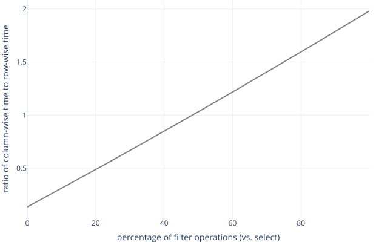

The Problem
-
We can build dataframes several different ways
-
Which will be most efficient?
-
Find out by doing experiments
What Can Dataframes Do?
i
class DataFrame:
def ncol(self):
"""Report the number of columns."""
def nrow(self):
"""Report the number of rows."""
def cols(self):
"""Return the set of column names."""
def eq(self, other):
"""Check equality with another dataframe."""
def get(self, col, row):
"""Get a scalar value."""
def select(self, *names):
"""Select a named subset of columns."""
def filter(self, func):
"""Select a subset of rows by testing values."""
Row-wise Storage
- A list of dictionaries
Column-wise Storage
- A dictionary of lists
Row-wise: Starting
i
from df_base import DataFrame
from util import dict_match
class DfRow(DataFrame):
def __init__(self, rows):
assert len(rows) > 0
assert all(dict_match(r, rows[0]) for r in rows)
self._data = rows
i
def dict_match(d, prototype):
if set(d.keys()) != set(prototype.keys()):
return False
return all(isinstance(d[k], prototype[k]) for k in d)
Row-wise Operations
i
def ncol(self):
return len(self._data[0])
def nrow(self):
return len(self._data)
def cols(self):
return set(self._data[0].keys())
def get(self, col, row):
assert col in self._data[0]
assert 0 <= row < len(self._data)
return self._data[row][col]
Row-wise Equality
i
def eq(self, other):
assert isinstance(other, DataFrame)
for (i, row) in enumerate(self._data):
for key in row:
if key not in other.cols():
return False
if row[key] != other.get(key, i):
return False
return True
- Don't rely on implementation details of the other dataframe
- We might want to compare this dataframe with one that's stored a different way
Row-wise Selection
i
def select(self, *names):
assert all(n in self._data[0] for n in names)
rows = [{key: r[key] for key in names} for r in self._data]
return DfRow(rows)
How to Filter?
-
User provides
func(red, green)returningTrueorFalse -
Need to match column names with parameters
i
def odd_even():
return DfRow([{"a": 1, "b": 3}, {"a": 2, "b": 4}])
i
def test_filter():
def odd(a, b):
return (a % 2) == 1
df = odd_even()
assert df.filter(odd).eq(DfRow([{"a": 1, "b": 3}]))
How to Call?
- Use
**to spread the row
Row-wise Filter
i
def filter(self, func):
result = [r for r in self._data if func(**r)]
return DfRow(result)
-
Spread the rows out to match
-
Convert the result to a row-wise dataframe

Column-Wise: Starting
i
from df_base import DataFrame
from util import all_eq
class DfCol(DataFrame):
def __init__(self, **kwargs):
assert len(kwargs) > 0
assert all_eq(len(kwargs[k]) for k in kwargs)
for k in kwargs:
assert all_eq(type(v) for v in kwargs[k])
self._data = kwargs
i
def all_eq(*values):
return (not values) or all(v == values[0] for v in values)
Column-wise Operations
i
def ncol(self):
return len(self._data)
def nrow(self):
n = list(self._data.keys())[0]
return len(self._data[n])
def cols(self):
return set(self._data.keys())
def get(self, col, row):
assert col in self._data
assert 0 <= row < len(self._data[col])
return self._data[col][row]
- Doesn't allow for empty dataframes
Column-wise Selection
i
def select(self, *names):
assert all(n in self._data for n in names)
return DfCol(**{n: self._data[n] for n in names})
Column-wise Filter
i
def filter(self, func):
result = {n: [] for n in self._data}
for i in range(self.nrow()):
args = {n: self._data[n][i] for n in self._data}
if func(**args):
for n in self._data:
result[n].append(self._data[n][i])
return DfCol(**result)
How to Compare?
-
Select is (probably) fast for column-wise but slow for row-wise
-
Filter is (probably) slower for column-wise than for row-wise
-
Overall performance will depend on the ratio of selects to filters
-
So we do experiments
Experimental Setup
i
RANGE = 10
def make_col(nrow, ncol):
def _col(n, start):
return [((start + i) % RANGE) for i in range(n)]
fill = {f"label_{c}": _col(nrow, c) for c in range(ncol)}
return DfCol(**fill)
def make_row(nrow, ncol):
labels = [f"label_{c}" for c in range(ncol)]
def _row(r):
return {
c: ((r + i) % RANGE) for (i, c) in enumerate(labels)
}
fill = [_row(r) for r in range(nrow)]
return DfRow(fill)
Experimental Setup
i
column-wise
{'label_0': [0, 1, 2], 'label_1': [1, 2, 3], 'label_2': [2, 3, 4]}
row-wise
[{'label_0': 0, 'label_1': 1, 'label_2': 2},
{'label_0': 1, 'label_1': 2, 'label_2': 3},
{'label_0': 2, 'label_1': 3, 'label_2': 4}]
i
FILTER = 2
def time_filter(df):
def f(label_0, **args):
return label_0 % FILTER == 1
start = time.time()
df.filter(f)
return time.time() - start
- Should vary the filtering criteria, the proportion of rows kept, etc.
So Which Is Better?
| nrow | ncol | filter_col | select_col | filter_row | select_row |
|---|---|---|---|---|---|
| 10 | 10 | 7.8e-05 | 8.8e-06 | 3.7e-05 | 2.1e-05 |
| 50 | 50 | 6.0e-4 | 1.9e-05 | 3.4e-4 | 2.4e-4 |
| 100 | 100 | 2.2e-3 | 3.5e-05 | 1.3e-3 | 8.4e-4 |
| 500 | 500 | 0.05 | 1.5e-4 | 0.03 | 0.02 |
| 1000 | 1000 | 0.21 | 3.0e-4 | 0.12 | 0.08 |
| 5000 | 5000 | 6.6 | 1.5e-3 | 3.5 | 2.1 |
| 10000 | 10000 | 25.4 | 3.0e-3 | 14.0 | 8.8 |
So Which Is Better?

Use Tools
- A profiler measures where a program spends its time
i
python -m cProfile --sort=tottime \
timing.py --silent 10x10 50x50 100x100 500x500 1000x1000
i
3007281 function calls (3003108 primitive calls) in 2.120 seconds
Ordered by: internal time
ncalls tottime percall cumtime percall filename:lineno(function)
2319840 0.671 0.000 0.671 0.000 util.py:10(<genexpr>)
5 0.271 0.054 0.521 0.104 df_col.py:50(filter)
1660 0.261 0.000 0.261 0.000 timing.py:20(<dictcomp>)
8066/3916 0.213 0.000 1.056 0.000 {built-in method builtins.all}
1660 0.191 0.000 0.191 0.000 df_col.py:53(<dictcomp>)
- Uh, what is line 7 of
util.pydoing?
The Offending Lines
-
A quarter of our total runtime is calling
dict_matchto check that all the rows in a row-wise dataframe have the same types for the same keys -
Surely we can do better…